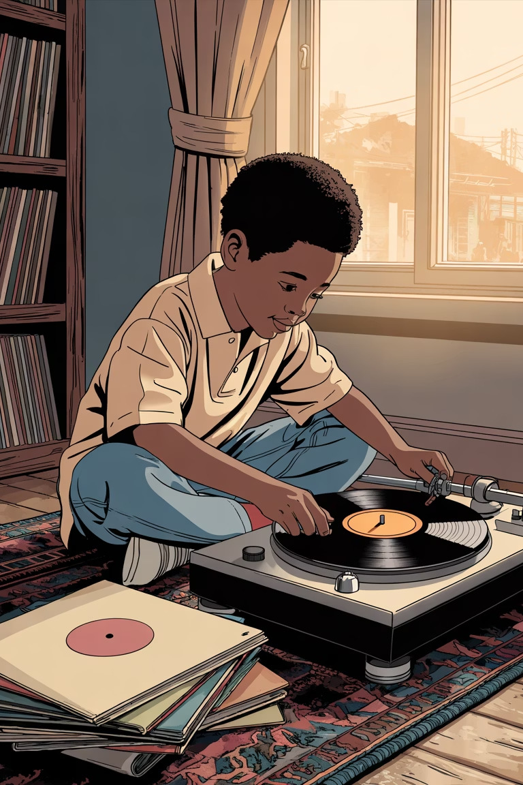
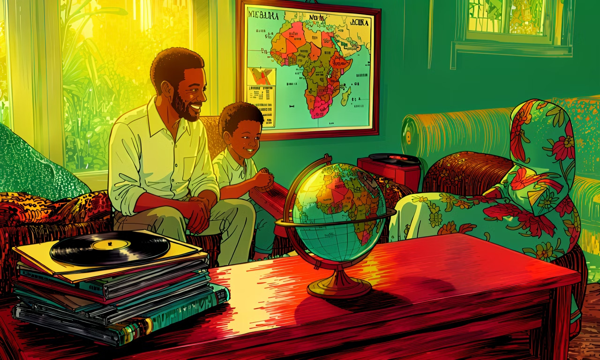
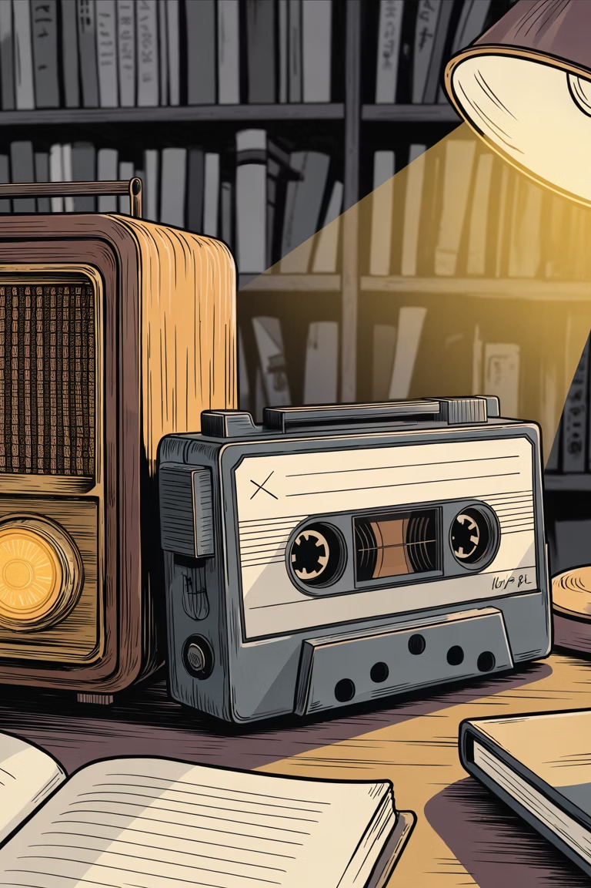
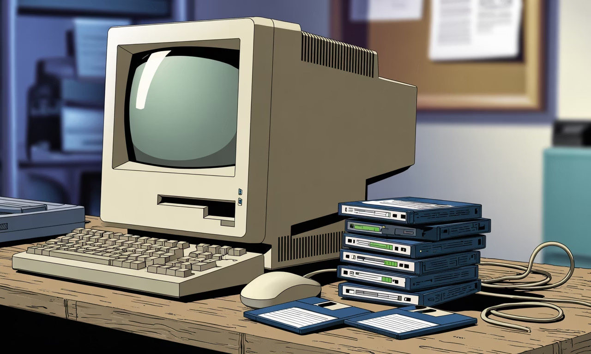
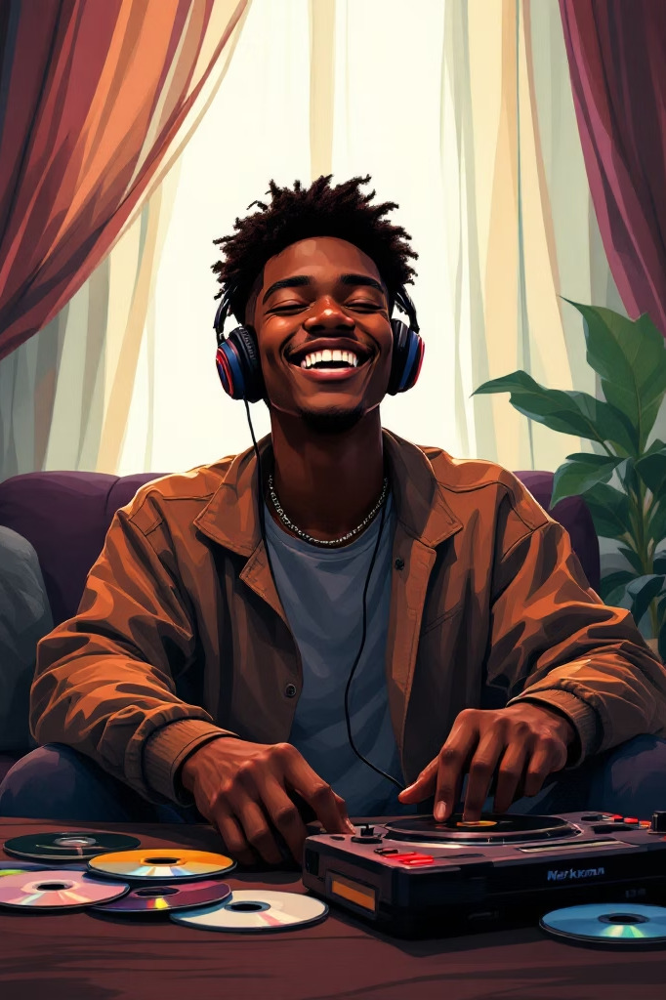
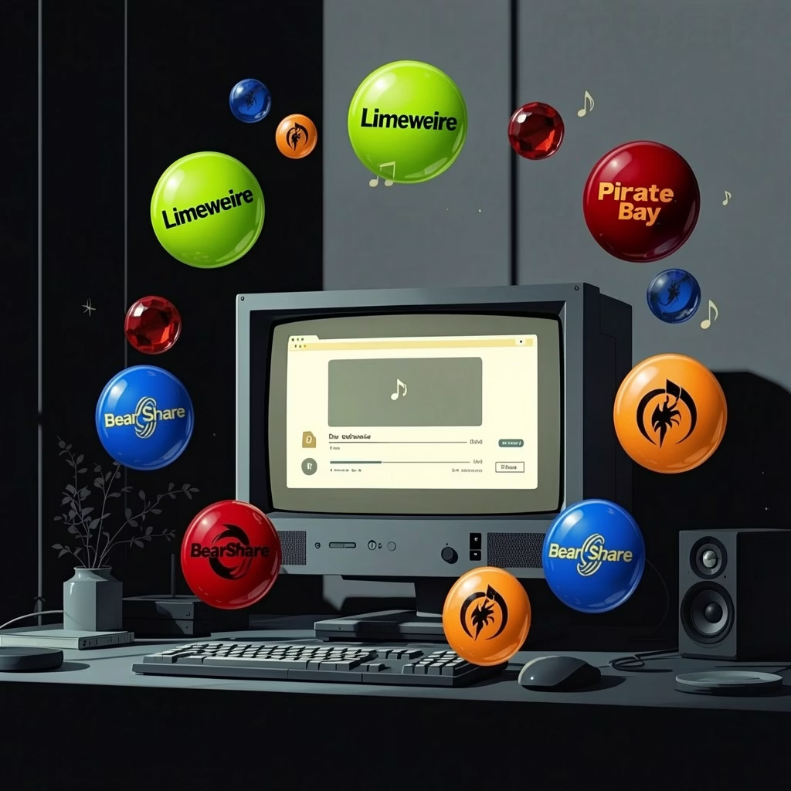
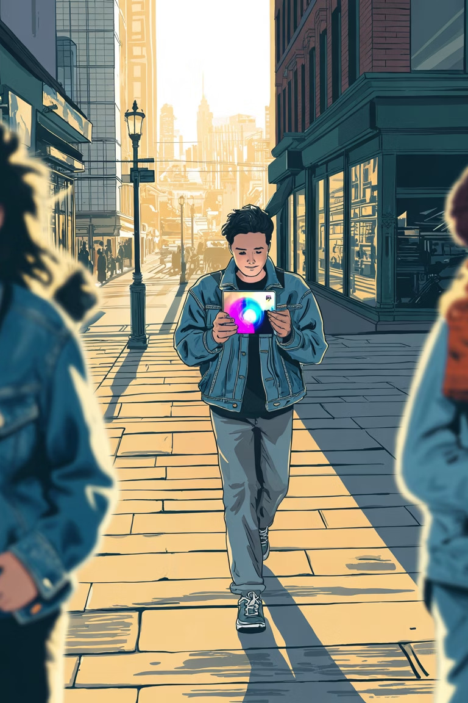
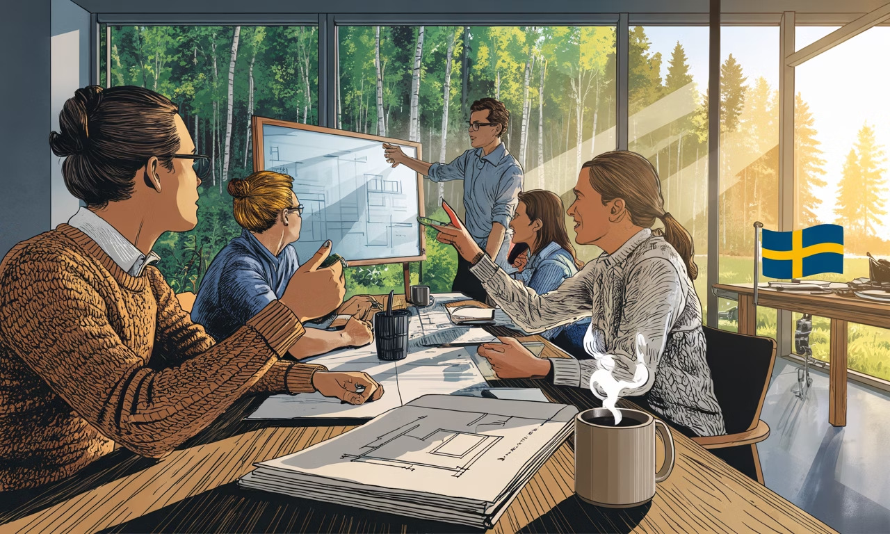

En personlig resa — från Lagos till Stockholm, och tekniken som förändrade hur världen lyssnar

Jag växte upp i Nigeria med två stora passioner: musik och teknik. Min pappas vinylsamling var mitt första klassrum — varje skiva var en lektion i rytm, berättande och känslor.
Jag kunde förlora mig själv i melodierna från Whitney Houston och Fela Kuti. Men mitt ingenjörssinne var alltid rastlöst. Hur kan jag bära med mig alla mina favoritlåtar, oavsett var jag befinner mig?

Man satt redo med fingret svävande över play och record samtidigt, och bad en bön att discjockeyn inte skulle prata över introt.
Varje inspelning var en handling av ren tro.


Kassetter gav plats åt CD-skivor, och Discman blev min nya följeslagare.
Ljudkvaliteten förbättrades och frustrationerna med DJ-snack försvann — men grundproblemet kvarstod: tillgång.
Varje nytt album krävde ett fysiskt köp. Att bygga en bred samling var dyrt och tidskrävande. Jag drömde om ett enklare sätt att utforska världens melodier.


Tidigt 2000-tal inledde en ny era av digital musikåtkomst — om än juridiskt tvetydig. Plattformar som Limewire och Napster antydde en framtid där musiken låg ett klick bort.
Trots långsamma nedladdningar, korrupta filer och virus tände dessa nätverk en kraftfull användarförväntan:
Omedelbar, enorm tillgång till nästan vilken låt som helst.
År 2008 löste två svenskar — Daniel Ek och Martin Lorentzon — musikproblemet för alltid. Varje låt som någonsin spelats in, i fickan, direkt, lagligt.
Sverige — ett land med 10 miljoner invånare — gav världen ett nytt sätt att uppleva musik.

Spotify blev mitt drömföretag — den perfekta fusionen av musik och ingenjörskonst.
Även om jag inte hamnade där, har jag lärt mig att Sveriges innovationsanda sitter djupt.
"Jag är stolt över att vara en del av den positiva förändringen."

Från vinylskivor i Lagos till streaming i Stockholm —
musiken har alltid hittat en väg.